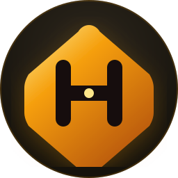

Hive Loqo Sistemi
Tələbələr üçün sosial platformanın rəsmi brend kimliyi, vektor loqosu və tətbiq variantları.
Hex-H: Həndəsə və Tələbə İcması
1. Altıbucaqlı (Hexagon): Təbiətdəki ən möhkəm, davamlı və birgə əməyi simvolizə edən pətək hüceyrəsi. Tələbə şəbəkəsinin vəhnədini ifadə edir.
2. İki Sütun və Əlaqə Körpüsü ("H" hərfi): İki paralel dayaq fərqli universitetləri və tələbələri, ortadakı dinamik körpü isə onlar arasındakı dialoqu və əlaqəni təcəssüm etdirir.
3. Mərkəzi Qızılı Düyün (Connection Node): Tələbə platformasında hər mesajın, postun və ideyanın bir-birinə bağlandığı mərkəz.


Rəsmi Logomark (48x48 Vektor)
Müxtəlif Fonlarda İstifadə (Açıq / Tünd / Vurğu)
Ölçü İyerarxiyası və Əlaqəli Komponentlər
16 px
Brauzer tab Favicon-u
32 px
Retina Favicon / Touch icon
40–48 px
Veb Navbar & Header

128–256 px
Tətbiq İkonu / Profil Avatarı